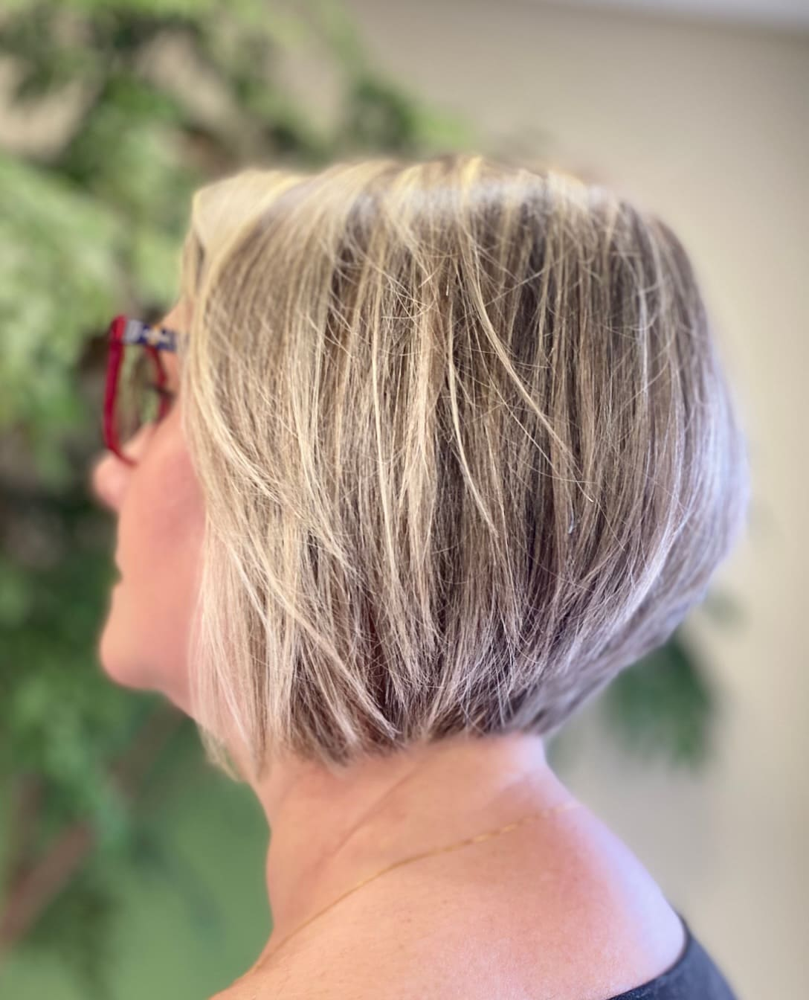

Cortes · Trabalho do salão
Corte curto
O contorno acompanha a linha da nuca e deixa a frente mais comprida.
Consultar sobre este corteNa sua próxima visita
Conte como costuma secar o cabelo e pergunte quando voltar para manter o contorno.
Ver serviço de cortes →
Ver detalhe do acabamento
Veja o desenho da base e o encontro das camadas na parte de trás.